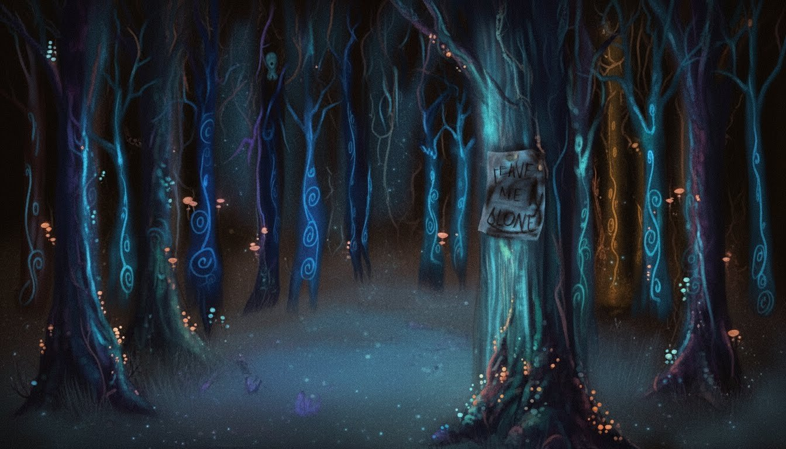

404
You Left the Path
Whatever you were looking for is not standing where the map says it should be. The woods do that sometimes.

404
Whatever you were looking for is not standing where the map says it should be. The woods do that sometimes.
